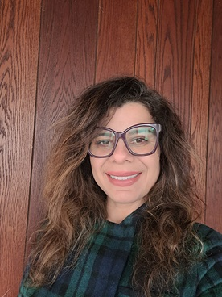

Welcome! I am an Assistant Professor in the Department of Mathematics at CUNY—New York City College of Technology (City Tech), with an appointment at the CUNY Graduate Center.
My research lies at the intersection of functional analysis, applied mathematics, and machine learning. I am interested in the mathematical foundations of data representation and learning: how complex scientific data can be represented, transformed, and reconstructed while preserving meaningful geometric and structural information.
Much of my recent work focuses on LiDAR and three-dimensional point-cloud data. I use ideas from measure theory, functional analysis, geometry, and numerical computation to develop and study mathematically motivated representations of these data. Current directions include Product Coefficients, reconstruction and hidden representations in autoencoders, multiscale and adaptive representations of LiDAR scan-line data, and applications to remote sensing and environmental data.
My earlier research includes numerical analysis and the study of PDE-based models arising in porous-media applications, including methane hydrates and adsorption. This background in analysis and scientific computation continues to inform my current work on mathematical representations of complex data, LiDAR point clouds, and representation learning.
For more details, see my CV (PDF) .
I enjoy collaborating with undergraduate students on research. Below is a video featuring student research projects (Summer 2020).
Yeshiva College C.S. Students Summer Research with Dr. Patricia Medina
I also maintain a teaching blog with short summaries and reflections: Patricia's Teaching Blog .
Selected themes
Current and developing research directions
Developing mathematically motivated representations of three-dimensional point-cloud data, including Product Coefficients, multiscale geometric features, and methods for preserving meaningful structure in classification and learning problems.
Studying reconstruction, information preservation, and hidden representations in autoencoders and related learning systems, with particular interest in repeated maps and the mathematical structure of learned representations.
Investigating how ideas from functional analysis, including Orlicz spaces and Luxemburg-type norms, can yield adaptive representations that respond to local geometric and density variation in LiDAR scan-line data.
Applying mathematical and machine-learning methods to environmental and geospatial data, with developing projects involving permafrost vulnerability, multiscale remote-sensing data, and natural-hazard applications.